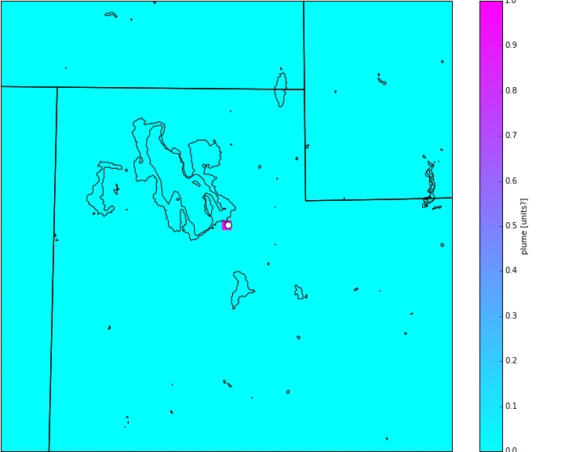

Tracer Plumes in WRF
Introduction to Tracers in WRF

Passive tracers have no influence on the model. Instead, they are influenced by the model. Tracers are added to the model and WRF blow them around. It's like initiating a puff of smoke at a location at some time and letting the winds blow the smoke around.
WRF 3.7+ includes a basic framework for creating tracers, but hopefully you'll find this commentary helpful.
In order to successfully add a tracer to your WRF simulation you must make edits to the following:
- WRFV3/test/em_real/namelist.input
- WRFV3/Registry/Registry.EM
- WRFV3/dyn_em/module_initialize_real.F
- WRFV3/dyn_em/solve_em.F
Note: When you make changes to (2,3,4) you need to re-compile the WRF code. When you change (2,4) you need to re-run real.exe. If you only make changes to (4) then you can re-run wrf.exe after you re-compile.
It's my suggestion to get the plume initialization working first by making edits to (1,2,3), then get the continuous plume to working by making edits to (4).
namelist.input
namelist.input contains all the WRF user options.
In the &dynamics section, add tracer_opt. This is the flag that turns the tracer option on.
The below example shows tracer_opt set to "2" for domain one and two.
...
&dynamics
tracer_opt = 2, 2
/
...
Registry.EM
Registry/Registry.EM defines output variables in WRF.
Here's a copy of my complete Registry.EM file.
Below are the the changes I made to Registry.EM... (Note: don't remove the tr17_* lines. I can't get WRF to compile when I remove those. But adding to the list is fine.)
module_initialize_real.F
WRFV3/dyn_em/module_initialize_real.F contains information on how to initialize WRF in the real.exe executable. Making these changes will initialize our tracer plume in WRF
Here's a copy of my complete module_initialize_real.F file.
Updates, if any here: Github.
The changes made to the original WRF code, starting on line 3372 are shown below...
solve_em.F
WRFV3/dyn_em/solve_em.F contains information on how to create a continuous plume. Making these changes will continue the plume each timestep in WRF.
Here's a copy of my complete solve_em.F file.
Updates, if any here: Github.
The changes made to the original WRF code, starting on line 265 are shown below...
This is very similar to the modifications made in module_initialize_real.F, but notice the KEY change from its to ips in the IF statement... I think this is becuase of a change in how WRF separates the code in real and wrf
This will continue the tracer plume every time step.
Note: I've realized that this method artificially removes tracers. Tracers transported back into the source location is automatically reset to 1. To fix this you'll have to add to the value already in the gird box, so something like this: tracer(225,1,198,P_S_SLV) = tracer(225,1,198,P_S_SLV) + 1.
Initlize Tracers after WRF begins
It is possible to create a new "smoke puff" at specific intervals rather than every time step (say, you want a new plume every hour). I haven't got the periodic plume working yet, but here's a clue in an email from Dave Gill...
Here is an approach to add a delayed tracer, but I haven't tested yet. (Special thanks to Sudheer Bhimireddy for testing this approach)
- In module_initialize_real.F, set tracer value to zero (don't add a new tracer at the initial time)
- In solve_em.F, add a conditional statement to add tracers only after a certain timestep
IF ( grid%itimestep .GE. tracer_time ) THENWhere tracer_time is the number of time steps after model initlization. (tracer_time = desired_spin-up_time(in seconds)/time_step(in seconds))
! Release the tracers
END IF
Increase Tracer Plume Output Frequency (or any other variable)
The default in WRF is to output variables in the wrfout file at interval defined in the namelist options. I output wrf variables every hour. But I want the tracer plume output at a higher frequency.
In order to increase the frequency of WRF output for the plume, follow the directions
here.
 The cyan image is an example of plume output at every hour. But we want the output every ten minutes.
In order to output the plumes data at a higher frequency you have to change the namelist options as outlined here. I have added two new output streams. One that outputs every 12 hours (stream 23) and one that outputs every 10 minutes (stream 24). Note: Steams can range from 0-24.
I have created a file called "myoutfields_d01.txt" which tells WRF to write the T2 and tr17_1 to stream 24 and HGT and LANDMASK to stream 23. Note: Do not include any spaces!
In namelist.input I added these lines in the &time_control section:
Or, if you have two domains...
When you run WRF with these options it will create two new netCDF files called auxhist23_d01_2015-06-18_00:00:00 and auxhist24_d01_2015-06-18_00:00:00. You can view these in ncview.
Example
View code for creating images like the ones shown below
on GitHub.